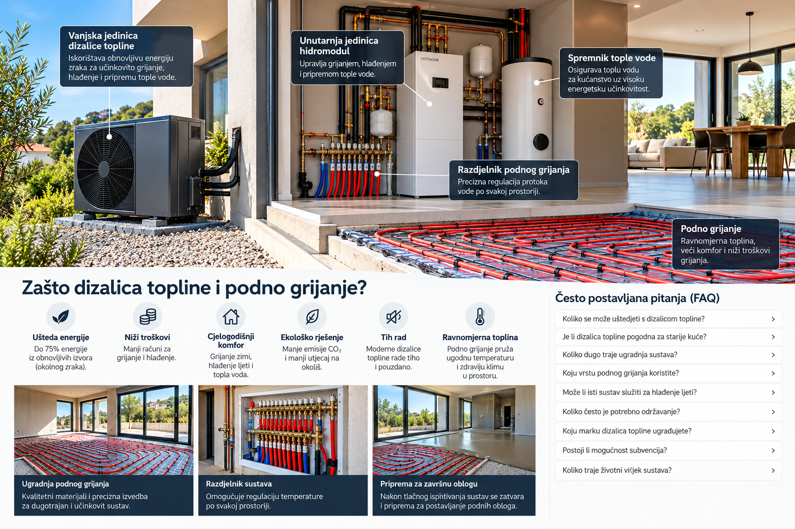

Podno grijanje raspoređuje toplinu preko velike površine i omogućuje ugodan osjećaj temperature u prostoru.

Učinkovito grijanje počinje dobrim planiranjem
Dizalica topline može biti vrlo učinkovito rješenje za grijanje stambenog objekta, pripremu potrošne tople vode, a kod odgovarajuće konfiguracije i za hlađenje. Kada se poveže s pravilno projektiranim podnim grijanjem, sustav može osigurati ravnomjernu temperaturu i ugodniji boravak uz niske radne temperature ogrjevnog sustava.
Pro in mont jedan j.d.o.o. uključuje sustave grijanja u širi plan izvedbe objekta. Posebnu pažnju posvećujemo usklađivanju podnog grijanja s podnim slojevima, elektroinstalacijama, vodovodom, strojarskim instalacijama i završnim građevinskim radovima.
Za svaki objekt važno je prethodno procijeniti toplinske potrebe, raspored prostorija, toplinsku izolaciju, stolariju, dostupnu projektnu dokumentaciju i način korištenja prostora. Tek nakon toga ima smisla definirati odgovarajuću konfiguraciju sustava.
Što možemo obuhvatiti
- pripremu instalacija za dizalicu topline i pripadajuću opremu
- izvedbu sustava podnog grijanja prema projektu
- ugradnju i organizaciju razdjelnika podnog grijanja
- pripremu prostora za unutarnju hidromodulsku/opremnu jedinicu
- pripremu za spremnik potrošne tople vode
- koordinaciju s vodovodnim, elektro i ostalim instalacijama
- usklađivanje faza izvedbe s ostalim izvođačima na projektu
Važno: konkretna snaga dizalice topline, broj krugova podnog grijanja, raspored opreme i ostali tehnički elementi ne određuju se napamet, nego prema projektu i stvarnim potrebama objekta.
Prednosti pravilno projektiranog sustava
Podno grijanje je pogodno za rad s niskotemperaturnim izvorima topline, uključujući dizalice topline.
Ovisno o odabranoj opremi i projektu, dizalica topline može sudjelovati u grijanju, pripremi tople vode i hlađenju.
Pravilno planirana strojarnica i razdjelnici omogućuju urednu organizaciju instalacija.
Uz odgovarajuću konfiguraciju sustav se može prilagoditi zimskom grijanju i ljetnom hlađenju.
Najbolji rezultat postiže se kada se sustav planira prije završetka podova, zidova i ostalih instalaterskih faza.